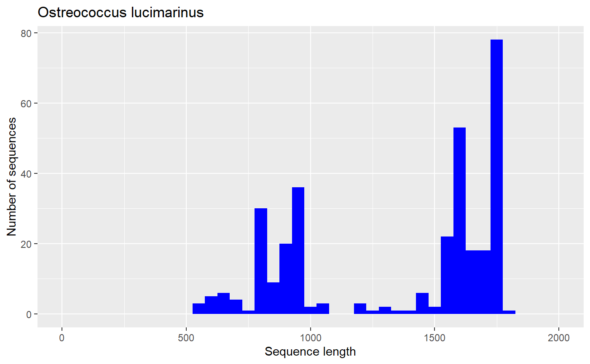
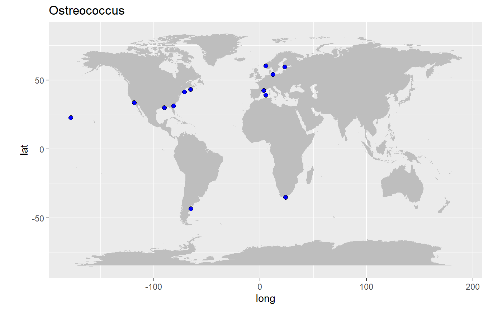
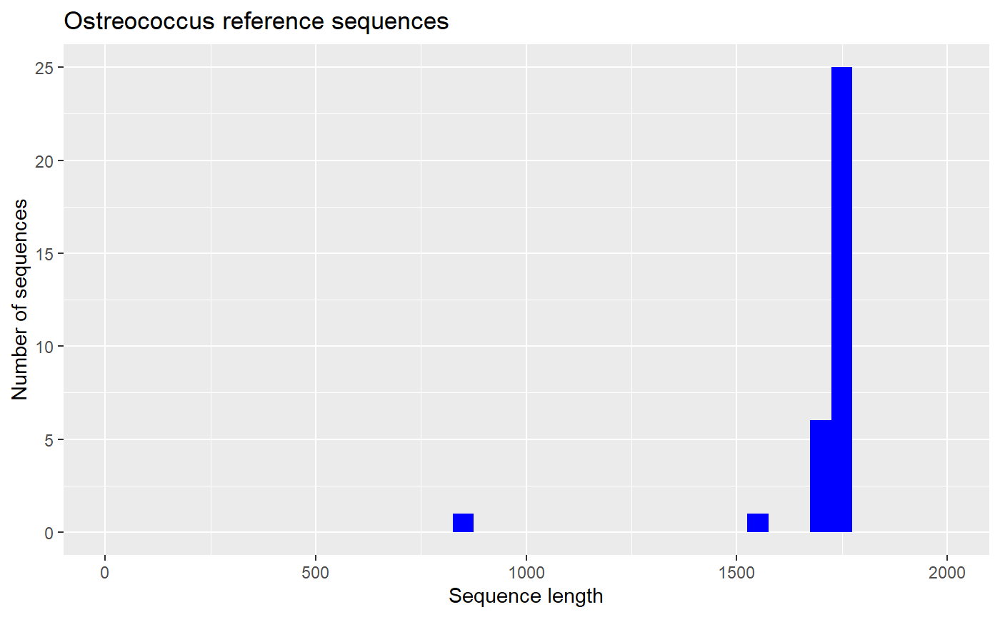

pr2database.RmdThe PR2 database is provided as a R package called pr2database. This page provides instruction to install and use the package.
Install from the GitHub web site using the devtools package
install.packages(devtools)
devtools::install_github("pr2database/pr2database")* installing *source* package 'pr2database' ...
** R
** data
*** moving datasets to lazyload DB
** byte-compile and prepare package for lazy loading
** help
*** installing help indices
converting help for package 'pr2database'
finding HTML links ... fini
pr2 html
** building package indices
** testing if installed package can be loaded
*** arch - i386
*** arch - x64
* DONE (pr2database)
In R CMD INSTALLThe PR2 database is provided as a data frame (or a tibble). This is a join between the following tables: * pr2_main * pr2_taxonomy * pr2_sequence * pr2_metadata
library("pr2database")
data("pr2")
# List of the different columns available - see the help of the package for information on each field
colnames(pr2)
#> [1] "pr2_accession" "kingdom"
#> [3] "supergroup" "division"
#> [5] "class" "order"
#> [7] "family" "genus"
#> [9] "species" "genbank_accession"
#> [11] "start" "end"
#> [13] "label" "gene"
#> [15] "organelle" "chimera"
#> [17] "chimera_remark" "reference_sequence"
#> [19] "added_version" "removed_version"
#> [21] "remark" "seq_id"
#> [23] "sequence" "sequence_length"
#> [25] "ambiguities" "sequence_hash"
#> [27] "gb_date" "gb_definition"
#> [29] "gb_organism" "gb_organelle"
#> [31] "gb_taxonomy" "gb_strain"
#> [33] "gb_culture_collection" "gb_clone"
#> [35] "gb_isolate" "gb_isolation_source"
#> [37] "gb_specimen_voucher" "gb_host"
#> [39] "gb_collection_date" "gb_environmental_sample"
#> [41] "gb_country" "gb_lat_lon"
#> [43] "gb_collected_by" "gb_note"
#> [45] "gb_sequence" "gb_publication"
#> [47] "gb_authors" "gb_journal"
#> [49] "eukref_name" "eukref_source"
#> [51] "eukref_env_material" "eukref_env_biome"
#> [53] "eukref_biotic_relationship" "eukref_specific_host"
#> [55] "eukref_geo_loc_name" "eukref_notes"
#> [57] "pr2_sample_type" "pr2_sample_method"
#> [59] "pr2_latitude" "pr2_longitude"
#> [61] "pr2_depth" "pr2_ocean"
#> [63] "pr2_sea" "pr2_sea_lat"
#> [65] "pr2_sea_lon" "pr2_country"
#> [67] "pr2_location" "pr2_location_geoname"
#> [69] "pr2_location_geotype" "pr2_location_lat"
#> [71] "pr2_location_lon" "pr2_sequence_origin"
#> [73] "metadata_remark" "pr2_continent"
#> [75] "pr2_country_geocode" "pr2_country_lat"
#> [77] "pr2_country_lon" "silva_taxonomy"The following examples makes use of the specifc R libraries
Install the libraries
install.packages("dplyr") # For filtering the data
install.package("ggplot2") # To plot data
install.package("maps") # To plot maps
source("https://bioconductor.org/biocLite.R") # This package is on Bioconductor
biocLite("Biostrings") # To save fasta filesLoad the libraries
Let us select all the available sequences for the Mamiellophyceae Ostreococcus
# Filter only the sequences for which the column genus contains Ostreococcus
pr2_ostreo <- pr2 %>% dplyr::filter(genus == "Ostreococcus")
# Select only the columns of interest
pr2_ostreo <- pr2_ostreo %>% dplyr::select( genbank_accession, species,
pr2_sample_type, gb_strain, gb_clone,
pr2_latitude, pr2_longitude,
sequence_length, sequence, reference_sequence )
pr2_ostreo
#> # A tibble: 327 x 10
#> genbank_accessi~ species pr2_sample_type gb_strain gb_clone pr2_latitude
#> <chr> <chr> <chr> <chr> <chr> <dbl>
#> 1 AF525872 Ostreo~ environmental <NA> UEPACIp5 NA
#> 2 EU562149 Ostreo~ environmental <NA> IND2.6 NA
#> 3 AY425309 Ostreo~ environmental <NA> RA01041~ NA
#> 4 GQ426346 Ostreo~ culture CB6 <NA> NA
#> 5 KC583118 Ostreo~ environmental <NA> RS.12f.~ NA
#> 6 JN862906 Ostreo~ culture BCC48000 <NA> NA
#> 7 JQ692065 Ostreo~ environmental <NA> PUPF_60 -43.3
#> 8 FR874749 Ostreo~ environmental <NA> 1815F12 60.3
#> 9 FJ431431 Ostreo~ environmental <NA> RA07100~ NA
#> 10 EU561670 Ostreo~ environmental <NA> IND1.11 -35.0
#> # ... with 317 more rows, and 4 more variables: pr2_longitude <dbl>,
#> # sequence_length <int>, sequence <chr>, reference_sequence <int>We will save the Ostreococcus sequences to a FASTA file. This is easy done with the bioconductor package BioStrings.
# Importing the sequence in a Biostring set
seq_ostreo <- Biostrings::DNAStringSet(pr2_ostreo$sequence)
# Constructing the name of each sequecne (the first line of the fasta file)
# using the genbank accession, species name, strain name and clone name
names(seq_ostreo) <- paste(pr2_ostreo$genbank_accession, pr2_ostreo$species,
"strain",pr2_ostreo$gb_strain,
"clone",pr2_ostreo$gb_clone,
sep="|")
# Displaying the Biostring set
seq_ostreo
#> DNAStringSet object of length 327:
#> width seq names
#> [1] 1766 ACCTGGTTGATCCTGCCAGTAG...AGGTGAACCTGCAGAAGGATCA AF525872|Ostreoco...
#> [2] 836 AAAGCTCGTAGTCGGATTTTGG...TCTGGGCCGCACGCGCGCTACA EU562149|Ostreoco...
#> [3] 1728 GCCAGTAGTCATATGCTTGTCT...GAGAAGTCGTAACAAGGTTTCC AY425309|Ostreoco...
#> [4] 1652 AGCCATGCATGTCTAAGTATAA...TGGATTACCGTGGGAAATTCGT GQ426346|Ostreoco...
#> [5] 1764 CCTGGTTGATCCTGCCAGTAGT...TAGGTGAACCTGCAGAAGGATC KC583118|Ostreoco...
#> ... ... ...
#> [323] 1570 CAATTTGAATGAGATTCAAAAA...TCAAAAAAGACCAAGCCGGAAG NC_008289|Ostreoc...
#> [324] 1609 TGCGAATGGCTCATTAAATCAG...CCATTGGATTACCGTGGGAAAT KT860897|Ostreoco...
#> [325] 656 TTTAGTCGGATTTTGGCTGAGA...ATGGCCGTTCTTAATTGGGGGA KT860646|Ostreoco...
#> [326] 672 GCTCGTAGTCGGACTTTGGCTG...GTTGGTGGAGTGATTTGTCTGG KT860808|Ostreoco...
#> [327] 672 GCTCGTAGTCGGACTTTGGCTG...TAGTTGGTGGAGTGATTTGTCT KT860809|Ostreoco...
# Saving the sequences as a fasta file
Biostrings::writeXStringSet(seq_ostreo, "examples/pr2_ostreo.fasta", width = 80)The fasta file will look as follows
>AF525872|Ostreococcus_lucimarinus|strain|NA|clone|UEPACIp5
ACCTGGTTGATCCTGCCAGTAGTCATATGCTTGTCTCAAAGATTAAGCCATGCATGTCTAAGTATAAGCGTTATACTGTG
AAACTGCGAATGGCTCATTAAATCAGCAATAGTTTCTTTGGTGGTGTTTACTACTCGGATAACCGTAGTAATTCTAGAGC
TAATACGTGCGTAAATCCCGACTTCGGAAGGGACGTATTTATTAGATAAAGACCG...
>EU562149|Ostreococcus_lucimarinus|strain|NA|clone|IND2.6
AAAGCTCGTAGTCGGATTTTGGCTGAGAACGGTCGGTCCGCCGTTAGGTGTGCACTGACTGGTCTCAGCTTCCTGGTGAG
GAGGTGTGCTTCATCGCCACTTAGTCACCGTGGTTACTTTGAAAAAATTAGAGTGTTCAAAGCGGGCTTACGCTTGAATA
TATTAGCATGGAATAACACCATAGGACTCCTGTCCTATTTCGTTGGTCTCGGGACGGGAGTAATGATTAAGATGAACAGT
TGGGGGCATTCGTATTTCATTGTCAGAGGTGAAATTCTTGGATTT...
>AY425309|Ostreococcus_lucimarinus|strain|NA|clone|RA010412.39
GCCAGTAGTCATATGCTTGTCTCAAAGATTAAGCCATGCATGTCTAAGTATAAGCGTTATACTGTGAAACTGCGAATGGC
TCATTAAATCAGCAATAGTTTCTTTGGTGGTGTTTACTACTCGGATAACCGT...
ggplot(pr2_ostreo) +
geom_histogram(aes(sequence_length), binwidth = 50, fill="blue") +
xlim(0,2000) + xlab("Sequence length") + ylab("Number of sequences") +
ggtitle("Ostreococcus sequences")
library(maps)
world <- map_data("world")
ggplot() +
geom_polygon(data = world, aes(x=long, y = lat, group = group), fill="grey") +
coord_fixed(1.3) +
geom_point(data=pr2_ostreo, aes(x=pr2_longitude, y=pr2_latitude), fill="blue", size=2, shape=21) +
ggtitle("Ostreococcus")
Reference sequences are a subset of sequences that are representative of the major taxa in a group. Usually they are long sequences and can be used to build a reference alignment (compare the histogram of reference to that all PR2 sequences).
pr2_ostreo_reference <- pr2_ostreo %>%
filter(reference_sequence == 1)
pr2_ostreo_reference
#> # A tibble: 32 x 10
#> genbank_accessi~ species pr2_sample_type gb_strain gb_clone pr2_latitude
#> <chr> <chr> <chr> <chr> <chr> <dbl>
#> 1 AF525872 Ostreo~ environmental <NA> UEPACIp5 NA
#> 2 JN862906 Ostreo~ culture BCC48000 <NA> NA
#> 3 AY425308 Ostreo~ culture RCC 356 1 NA
#> 4 AF525852 Ostreo~ environmental <NA> UEPACDp1 NA
#> 5 AF525858 Ostreo~ environmental <NA> UEPAC30~ NA
#> 6 AF525857 Ostreo~ environmental <NA> UEPAC05~ NA
#> 7 AF525861 Ostreo~ environmental <NA> UEPACGp3 NA
#> 8 AF525848 Ostreo~ environmental <NA> UEPACAp1 NA
#> 9 AF525859 Ostreo~ environmental <NA> UEPAC30~ NA
#> 10 AF525855 Ostreo~ environmental <NA> UEPACXp1 NA
#> # ... with 22 more rows, and 4 more variables: pr2_longitude <dbl>,
#> # sequence_length <int>, sequence <chr>, reference_sequence <int>
ggplot(pr2_ostreo_reference) +
geom_histogram(aes(sequence_length), binwidth = 50, fill="blue") +
xlim(0,2000) + xlab("Sequence length") + ylab("Number of sequences") +
ggtitle("Ostreococcus reference sequences")